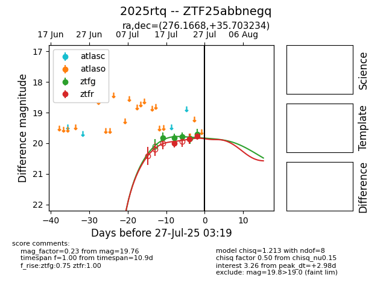

Target 2025rtq at 2025-08-06 17:27, see:
FINK: fink-portal.org/2025rtq
Lasair: lasair-ztf.lsst.ac.uk/objects/2025rtq
ALeRCE: alerce.online/object/2025rtq
TNS: wis-tns.org/object/2025rtq
YSE: ziggy.ucolick.org/yse/transient_detail/2025rtq
alt names
ZTF25abbnegq (ztf,fink)
2025rtq (tns,yse)
ATLAS25igz (atlas)
PS25fsp (panstarrs)
coordinates:
equatorial (ra, dec) = (276.1668,+35.70323)
galactic (l, b) = (63.4929,+20.50775)
photometry
last ztfg=19.71, ztfr=19.93
5 ztfg, 5 ztfr detections
